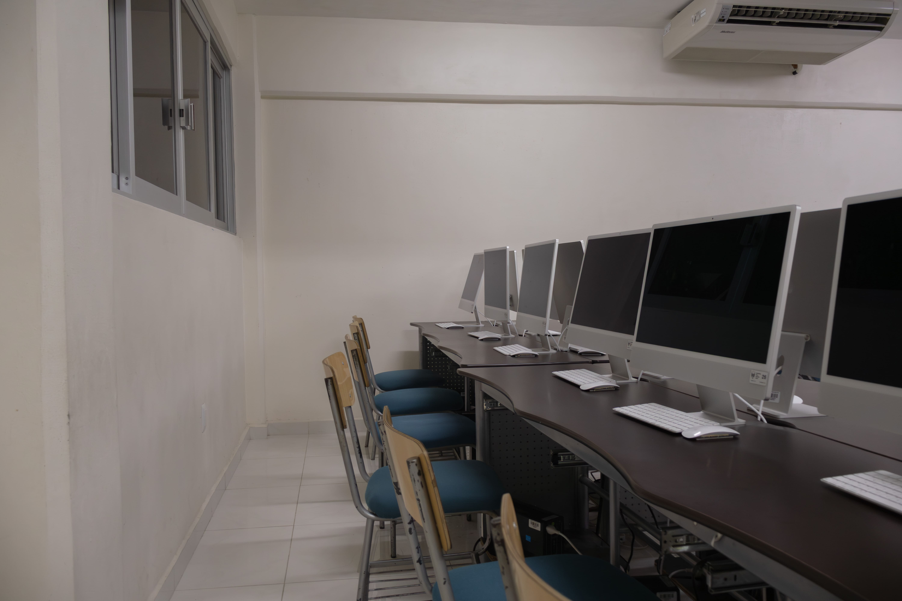
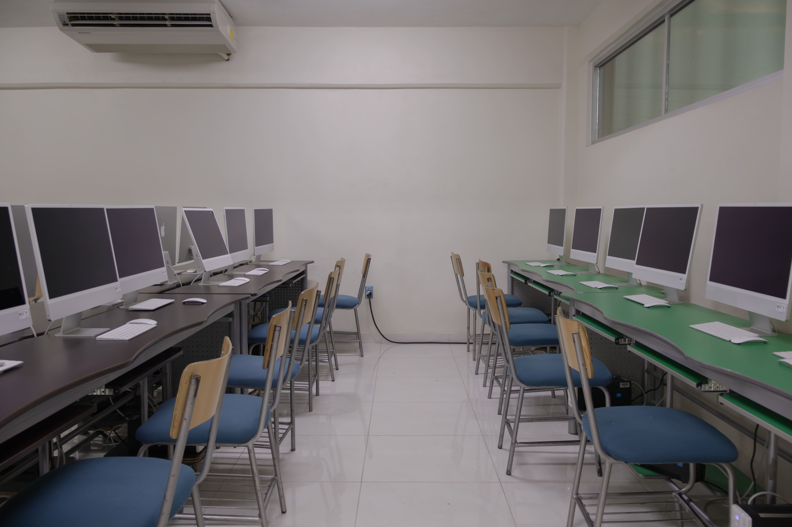
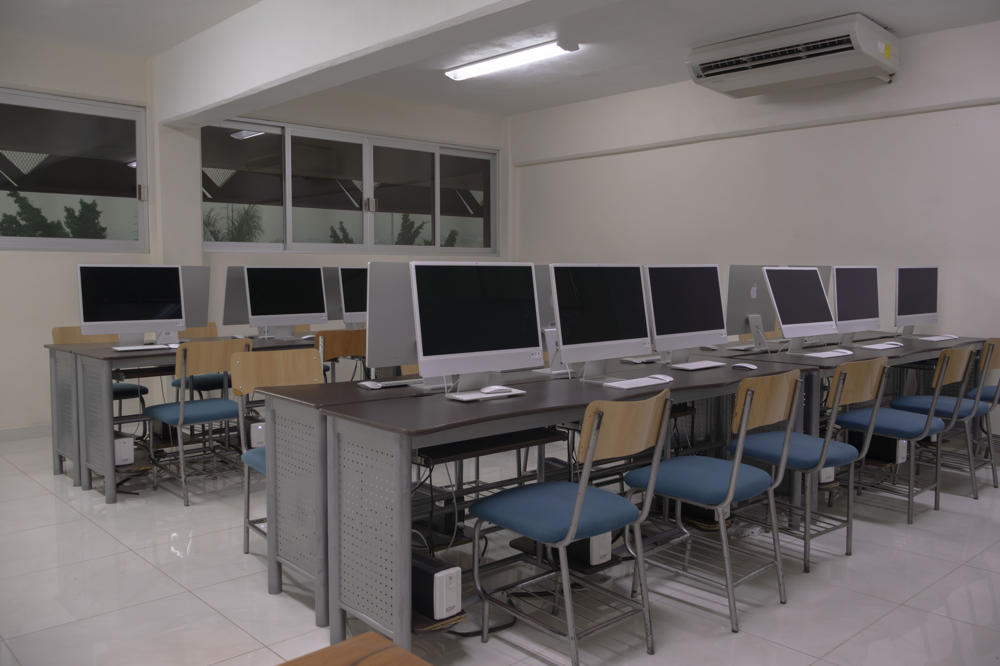
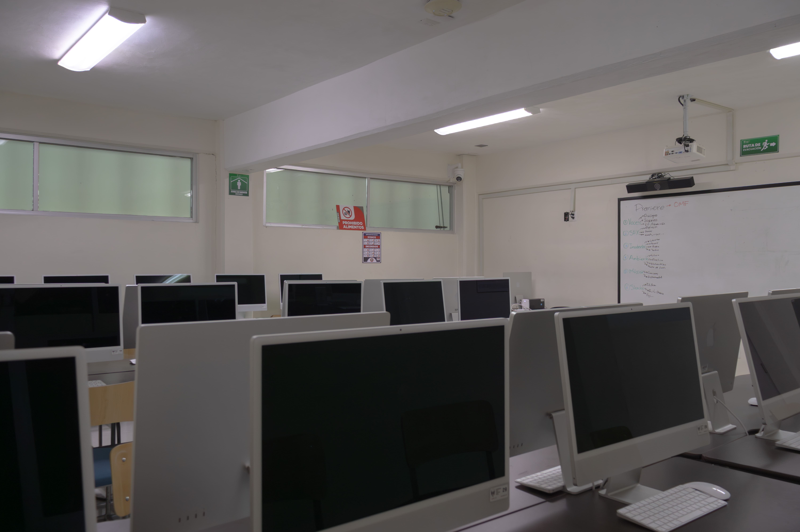
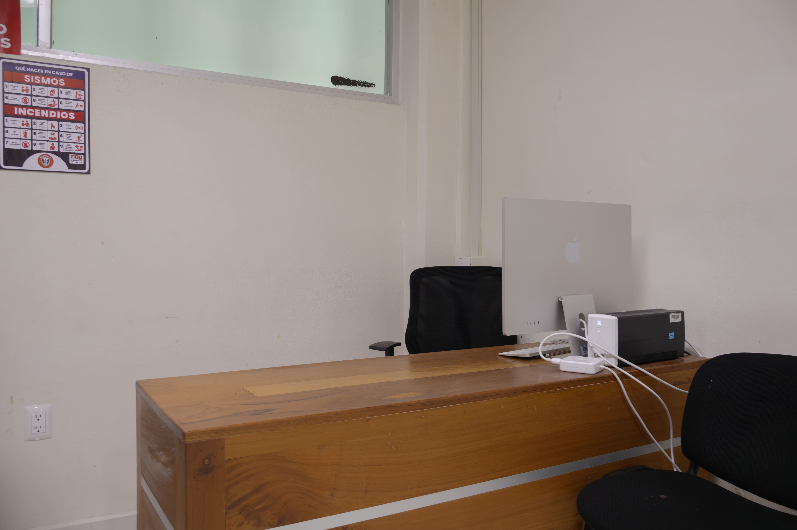

Laboratorio · IADC
iMacs con teclados y ratones Magic de Apple, proyector interactivo y estación del maestro con escritorio de madera. El ecosistema Apple para producción creativa profesional.
Galería del espacio





Equipamiento
El Laboratorio Mac está equipado con iMacs y periféricos Apple — teclados Magic Keyboard y ratones Magic Mouse. La disposición en dos filas enfrentadas permite al maestro supervisar toda la sala de un vistazo. El proyector interactivo y el pizarrón panorámico facilitan demostraciones y revisiones grupales en tiempo real.
Software instalado
El Laboratorio Mac está ubicado junto al Laboratorio de Cómputo Windows. Ambos espacios trabajan en conjunto para cubrir todas las necesidades de producción digital de los alumnos, ofreciendo lo mejor de los dos ecosistemas.